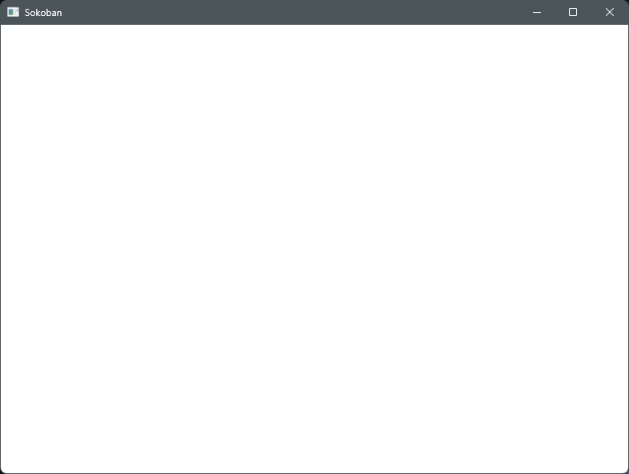
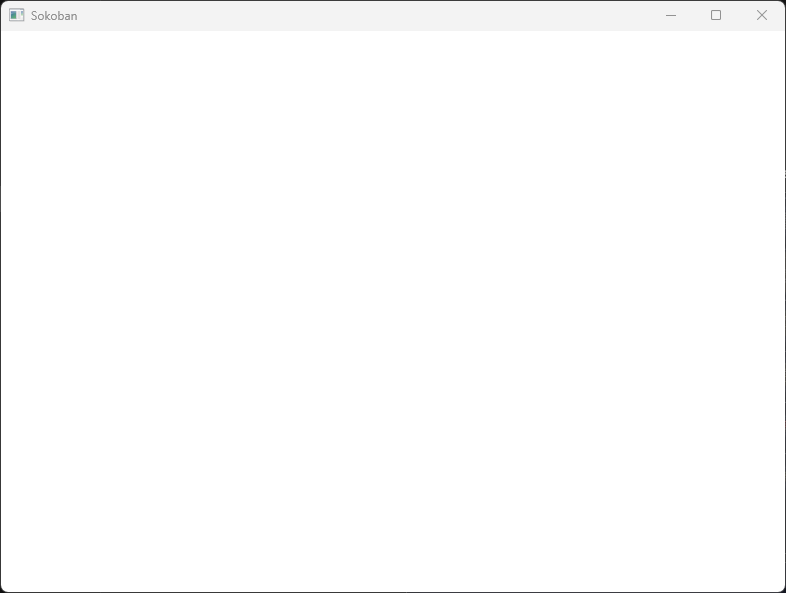

엔진 없이 Win32 API만으로 소코반 게임을 만드는 시리즈의 첫 편입니다. WinMain부터 윈도우 클래스 등록, 창 생성, 메시지 루프, WndProc까지 빈 창 하나를 띄우는 뼈대를 만듭니다. 메시지 루프가 없을 때와 PostQuitMessage가 없을 때 실제로 어떻게 되는지도 실행해서 확인합니다.

영상에서 직접 실행해 본 장면들입니다.
실행 → 창 생성 → 화면에 표시 → return 0 창이 뜨자마자 0.05초 만에 종료 (종료 코드 0)

> 창 닫기 버튼 클릭 > tasklist | findstr sokoban sokoban.exe 21384 Console 11 9,752 K
main.cpp LIBCMT.lib(exe_main.obj) : error LNK2019: main"int __cdecl __scrt_common_main_seh(void)" (?__scrt_common_main_seh@@YAHXZ) 함수에서 참조되는 확인할 수 없는 외부 기호 console.exe : fatal error LNK1120: 1개의 확인할 수 없는 외부 참조입니다.
시리즈의 시작 코드입니다. 다음 편부터는 이전 편 대비 바뀐 줄을 표시합니다.
1#include <windows.h>23LRESULT CALLBACK WndProc(HWND hWnd, UINT msg, WPARAM wParam, LPARAM lParam)4{5 switch (msg)6 {7 case WM_DESTROY:8 PostQuitMessage(0);9 return 0;10 }11 return DefWindowProcW(hWnd, msg, wParam, lParam);12}1314int WINAPI wWinMain(HINSTANCE hInstance, HINSTANCE hPrevInstance,15 PWSTR pCmdLine, int nCmdShow)16{17 WNDCLASSEXW wc = {};18 wc.cbSize = sizeof(wc);19 wc.lpfnWndProc = WndProc;20 wc.hInstance = hInstance;21 wc.hCursor = LoadCursorW(nullptr, IDC_ARROW);22 wc.hbrBackground = (HBRUSH)(COLOR_WINDOW + 1);23 wc.lpszClassName = L"SokobanWindow";24 RegisterClassExW(&wc);2526 HWND hWnd = CreateWindowExW(0, L"SokobanWindow", L"Sokoban",27 WS_OVERLAPPEDWINDOW,28 CW_USEDEFAULT, CW_USEDEFAULT, 800, 600,29 nullptr, nullptr, hInstance, nullptr);30 ShowWindow(hWnd, nCmdShow);31 UpdateWindow(hWnd);3233 MSG msg;34 while (GetMessageW(&msg, nullptr, 0, 0) > 0)35 {36 TranslateMessage(&msg);37 DispatchMessageW(&msg);38 }39 return (int)msg.wParam;40}
Visual Studio
main.cpp 를 추가명령줄 (x64 Native Tools Command Prompt)
cl /EHsc /std:c++20 /utf-8 /DUNICODE /D_UNICODE main.cpp /link /SUBSYSTEM:WINDOWS user32.lib gdi32.lib
코드는 흐름을 보여 주려고 에러 처리를 생략했습니다. 실제 프로그램에서는 RegisterClassExW·CreateWindowExW 의 반환값을 확인하세요.